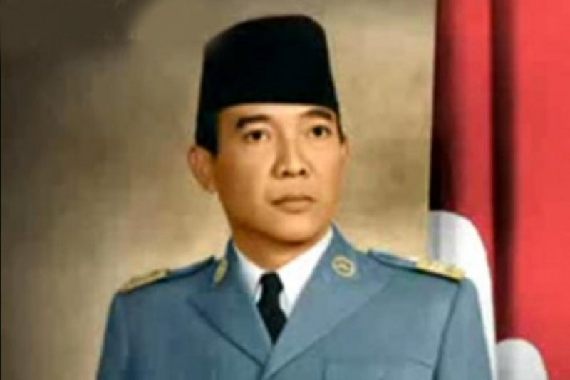

BIODATA IR. SOEKARNO
Profil Singkat Ir. Soekarno
Presiden pertama Republik Indonesia, Ir. Soekarno atau Bung Karno, adalah sosok yang banyak dikagumi.
Lahir di Surabaya, 6 Juni 1901 dari pasangan Raden Soekemi Sosrodihardjo dan Ida Ayu Nyoman Rai, Soekarno
menempuh pendidikan dasar hingga SMA di Tulung Agung, Mojokerto, dan Surabaya. Usai tamat dari HBS, Soekarno
berkuliah di Technische Hoogeschool te Bandoeng (sekarang ITB), dan lulus dengan gelar Insinyur Teknik pada 1926.
Pada 1915, Soekarno pernah tinggal di rumah H.O.S Tjokroaminoto, tokoh pendiri Sarekat Islam.
Di rumah H.O.S Tjokroaminoto lah, jiwa nasionalisme Bung Karno tumbuh dan bergelora. Soekarno muda mulai belajar
berpolitik, berpidato, dan aktif menulis di koran harian ‘Oetoesan Hindia’.
Pada 4 Juli 1927, Soekarno memutuskan untuk merumuskan ajaran Marhaenisme dan mendirikan Partai Nasional Indonesia (PNI).
Karena partai ini bertujuan untuk Indonesia merdeka, Belanda menangkap Soekarno pada 29 Desember 1929. PNI juga
dibubarkan.
Setelah bebas di tahun 1931, Soekarno bergabung dengan Partindo dan sekaligus memimpinnya.
Akibatnya, Soekarno kembali ditangkap Belanda dan dibuang ke Ende, Flores pada 1933, dan dipindahkan ke Bengkulu empat
tahun kemudian.
Setelah melalui perjuangan panjang, Soekarno dengan Bung Hatta memproklamasikan Kemerdekaan Republik Indonesia pada 17
Agustus 1945.
Dalam sidang BPUPKI 1 Juni 1945, Soekarno mengenalkan gagasan tentang Pancasila.
Dalam sidang PPKI 18 Agustus 1945, Soekarno terpilih sebagai presiden pertama RI. Soekarno menjabat sebagai presiden
hingga tahun 1966.
Gejolak ekonomi, sosial, politik, dan pemberontakan G-30-S/PKI yang menewaskan sejumlah perwira TNI, membuat kekuasan
Bung Karno redup, dan akhirnya menyerahkan jabatannya sebagai presiden Indonesia.
Soekarno meninggal dunia di RSPAD, 21 Juni 1970, dan dimakamkan di Blitar, Jawa Timur dekat makam sang ibunda.
Saat peringatan Hari Pahlawan tahun 1986, Presiden Soeharto memberikan gelar Pahlawan Proklamator kepada Soekarno.